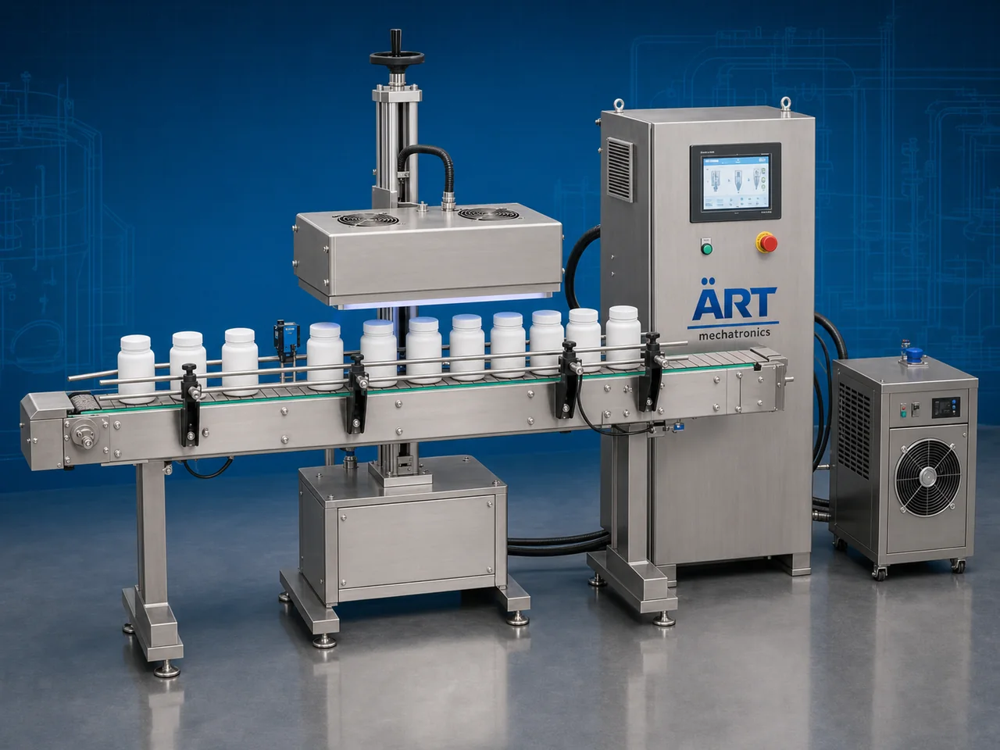

Container Sealing Machine (Automatic Bottle, Jar & Drum Sealing System)
A Container Sealing Machine, also known as a Bottle Sealing Machine, Jar Sealing Machine, Container Closure Machine, or Automatic Container Sealing System, is an advanced industrial packaging solution designed for automatic container feeding, cap sealing, induction sealing, foil sealing, leak-proof sealing, spray pump sealing, drum bung sealing, coding, and high-speed packaging operations for bottles, jars, jugs, jerry cans, canisters, drums, gallons, buckets, tins, and industrial containers.

About the Container Sealing Machine
Container sealing systems are widely used for:
- Bottle cap sealing
- Induction foil sealing
- Jar and jug sealing
- Jerry can leak-proof sealing
- Drum and barrel sealing
- Gallon container sealing
- Cosmetic bottle sealing
- Industrial liquid packaging operations
The machine improves:
- Leak-proof packaging quality
- Product hygiene
- Product freshness protection
- Packaging consistency
- Production efficiency
- Transportation safety
- Tamper-proof packaging security
Industrial container sealing machines use:
- Automatic container feeding systems
- Servo synchronized sealing systems
- PLC and HMI automation controls
- Induction and heat sealing technology
- Conveyor synchronized handling systems
to automatically seal containers with superior sealing quality and high production efficiency.
Container sealing machines are widely used in industries such as:
Beverage industries Food processing industries Chemical industries Cosmetic industries Pharmaceutical industries Lubricant industries Agrochemical industries FMCG industries
where hygienic sealing, leak-proof packaging, and high-speed production are essential.
The machine is highly suitable for:
- Water and beverage bottle sealing
- Spray bottle sealing
- Chemical container sealing
- Drum and gallon sealing
- Cosmetic liquid packaging
- Industrial bulk liquid packaging
ART Mechatronics offers high-performance container sealing machines, engineered for continuous industrial operation, precision sealing performance, hygienic packaging quality, and reliable long-term packaging automation.
Working Principle of Container Sealing Machine
- 1. Filled Container Feeding Filled containers are automatically fed into sealing section through synchronized conveyor systems.
- 2. Sealing Preparation Process Machine automatically positions caps, foils, or sealing closures before sealing operation.
Servo synchronization ensures accurate sealing alignment and smooth container handling.
- 3. Sealing Operation Machine handles: ✔ Screw cap sealing ✔ Induction foil sealing ✔ Spray pump sealing ✔ Drum bung sealing ✔ Gallon closure sealing ✔ Jerry can sealing ✔ Canister lid sealing
accurately and continuously.
- 4. Leak-Proof & Hygienic Sealing Process Machine performs: Induction sealing Heat sealing Foil sealing Tamper-proof sealing Leak-proof closure sealing
for hygienic and transportation-safe packaging quality.
- 5. Coding & Inspection Integration Optional systems include: Batch coding Date printing QR code printing Vision inspection systems Seal integrity testing systems
- 6. Finished Container Discharge Sealed containers discharged automatically for: Labeling Cartoning Case packing Warehouse storage Export shipment handling
Types of Container Sealing Machines
- 1. Bottle Induction Sealing Machine Designed for: ✔ Beverage and liquid bottle packaging applications
- 2. Spray Bottle Sealing Machine Suitable for: ✔ Cosmetic and spray packaging systems
- 3. Jerry Can & Drum Sealing Machine Uses: ✔ Industrial liquid container sealing systems
- 4. Gallon & Jug Sealing Machine Designed for: ✔ Large volume liquid packaging systems
- 5. Servo Driven Sealing Machine Suitable for: ✔ Precision high-speed sealing operations
- 6. Fully Automatic Container Sealing System Designed for: ✔ Complete industrial packaging automation lines
Industries Using Container Sealing Machines
🥤 Beverage Industry Water bottles, juices, soft drinks, and beverage packaging systems. 🍅 Food Processing Industry Sauces, syrups, edible oils, and food liquid packaging systems. ⚗️ Chemical Industry Industrial liquids, solvents, and chemical container sealing systems. 🧴 Cosmetic & Personal Care Industry Perfumes, lotions, shampoos, and spray bottle packaging systems. 🛢️ Lubricant Industry Industrial oils, lubricants, and heavy-duty liquid packaging systems. 🛒 FMCG Industry Consumer liquid products and retail packaging systems.
Features & Advantages
- High-speed automatic container sealing operation
- Accurate and leak-proof sealing systems
- Hygienic and tamper-proof packaging quality
- PLC and servo automation control systems
- Improves product safety and shelf life protection
- Reduces manual sealing dependency
- Supports multiple container sizes and closure types
- Reliable long-term industrial performance
- Smooth and continuous packaging line integration
Technical Highlights
Machine Type: Automatic container sealing machine Industrial sealing system Packaging closure machine Container Type: PET bottles Glass jars Jerry cans Canisters Drums Gallons Buckets Sealing Compatibility: Induction sealing Foil sealing Heat sealing Leak-proof sealing Cap sealing systems Features: PLC control system Servo synchronization Touchscreen HMI Automatic sealing integration Seal inspection systems Applications: Beverages Oils Chemicals Cosmetic liquids Detergents Industrial liquids Automation: Semi-automatic Fully automatic industrial systems
Turnkey Container Sealing Solutions
ART Mechatronics offers: Complete sealing systems Automatic container sealing solutions Packaging automation integration systems Conveyor synchronization systems Installation & commissioning After-sales service & AMC
Why Choose Art Mechatronics
Expertise in industrial packaging and automation systems Customized sealing solutions for multiple industries High-performance and precision sealing technology Advanced PLC and servo automation systems Proven industrial packaging performance across sectors
Applications
Beverage Manufacturing Plants Food Processing Industries Chemical Packaging Facilities Cosmetic Manufacturing Units Industrial Liquid Packaging Plants FMCG Packaging Industries
Get pricing & specs for the Container Sealing Machine
Share the product, target capacity, current process and plant location. These details help our engineers discuss the right machine or line configuration.
One partner, from design to start-up
ART Mechatronics designs, manufactures, installs and commissions your Container Sealing Machine solution with regional presence in India, UAE and Thailand.